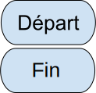
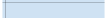
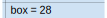
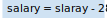
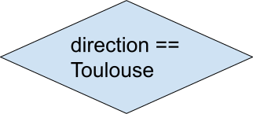
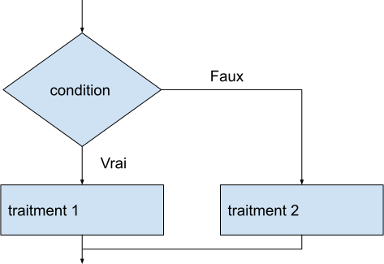
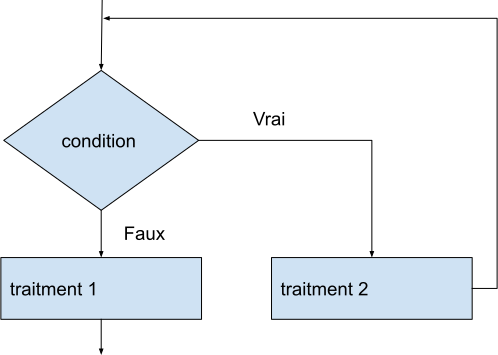

Pseudocode
- L'affectation représentée par le signe : =
- L'alternative représentée par la structure : SI (condition) ALORS (instruction) SINON (instruction)
- La répétition : REPETER POUR (variable) DE (début nombre) JUSQU'À (fin nombre) (instructions)
- La répétition conditionnelle : TANT QUE(condition)
- La séquence d'instruction : FIN(mot-clé)
| Pseudocode français | Exemple français | Pseudocode anglais | Exemple anglais |
|---|---|---|---|
| SI (condition) ALORS (instruction) SINON (instruction) |
SI 1 < 2 ALORS
output "1 est plus petit que 2"
SINON
output "2 est plus petit que 1"
FIN SI
|
if (condition) then (instruction) else (instruction) |
if 1 < 2 then
output "1 est plus petit que 2"
else
output "2 est plus petit que 1"
end if
|
| REPETER POUR (variable) DE (début nombre) JUSQU'À (fin nombre) (instructions) |
REPETER POUR index DE 1 JUSQU'À 100 output index FIN REPETER |
loop for (variable) from (dèbut nombre) to (fin nombre) (instructions) |
loop for index from 1 to 100
output index
end loop
|
| TANT QUE (condition) |
fini = faux
TANT QUE pas fini
output "cette boucle ne s'arrêtera jamais"
FIN TANT QUE
|
loop while (condition) |
done = false
loop while not done
output "cette boucle ne s'arrêtera jamais"
end while
|
| FIN (mot-clé) | FIN TANT QUE/FIN SI/FIN REPETER |
end (mot-clé) | end loop/end if |
| = | nombre = 28 | = | number = 28 |
Arrays/List/Tablaux
- len(tableau) pour obtenir le nombre total d'éléments dans le tableau
- tableau.append(élément) pour ajouter un nouvel élément à la fin du tableau
- tableau.pop(position) pour supprimer un élément à une position spécifiée dans un tableau
Flowchart
| Flowchart forme | Exemple | Explications |
|---|---|---|
|  |
Marque le début et la fin d'un programme | |
 |
documente le code. Ne s'exécute pas | |
|  |  | déclare une variable et l'initialise potentiellement |
|  | modifie le contenu de la variable en fonction d'une opération | |
|  | tests ou branchements conditionnels |
Les différentes structures de l'organigramme de programmation
| Pseudocode français | Flowchart |
|---|---|
SI condition ALORS
traitment 1
SINON
tratiment 2
FIN SI
|
 |
fini = faux
TANT QUE pas fini
output "cette boucle ne s'arrêtera jamais"
FIN TANT QUE
|
 |